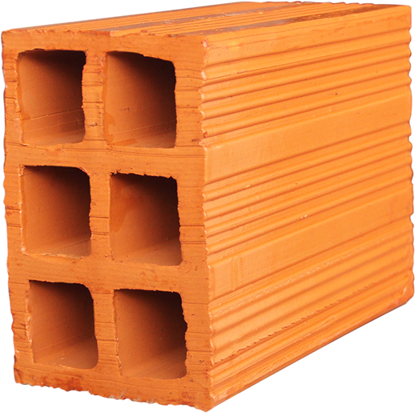
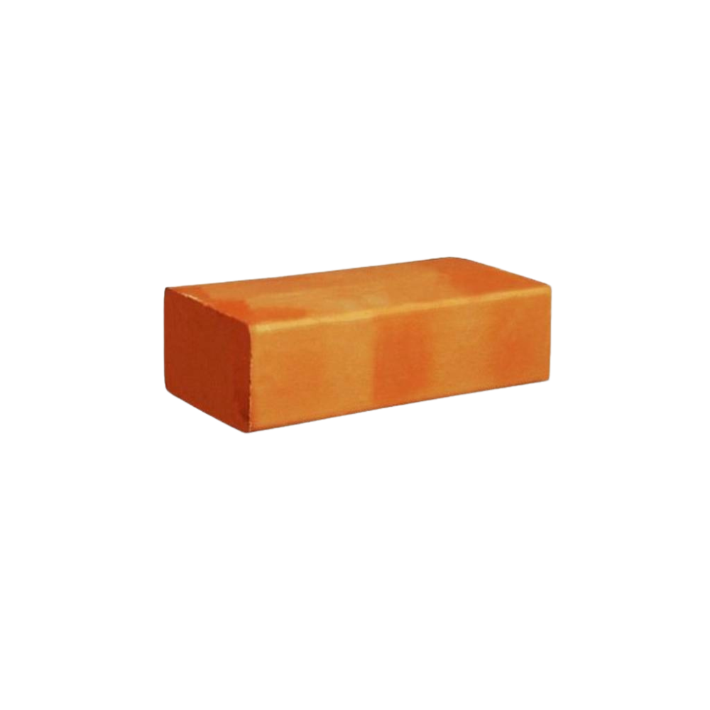
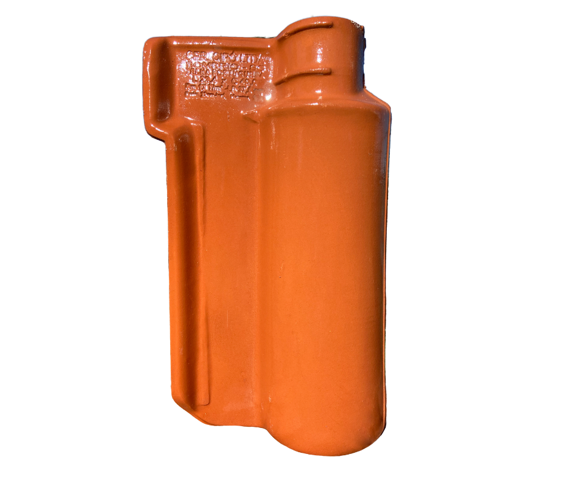

Nossos Produtos
Tijolos

Tijolo 6 Furos
- Largura: 9 cm
- Tipos: Vedação
- Fornecedores: Cerâmica Tatuí, Olaria do Vale

Tijolo Maciço
- Largura: 5 cm
- Tipos: Estrutural, Aparente
- Fornecedores: Cerâmica Vermelha
Telhas

Telha Portuguesa
- Largura: 24 cm
- Tipos: Esmaltada, Natural
- Fornecedores: Cejatel, Temax
Outros Materiais
Em breve, mais informações sobre outros materiais.